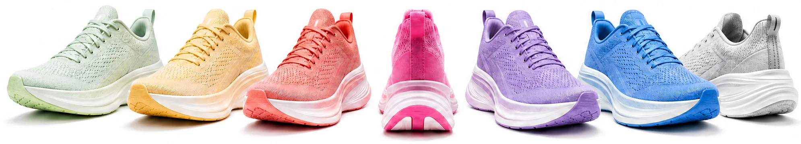
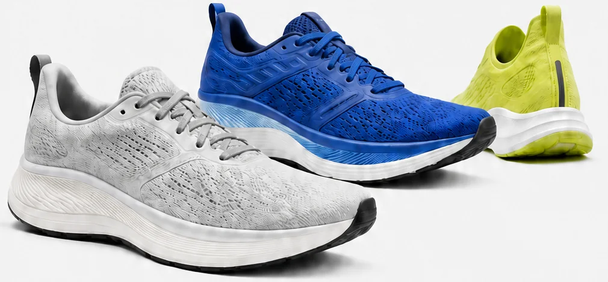
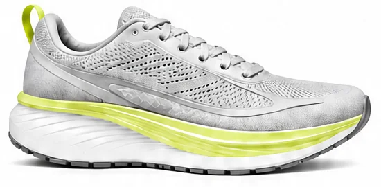
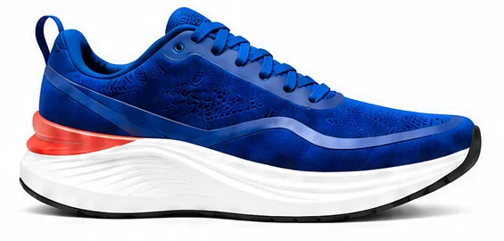
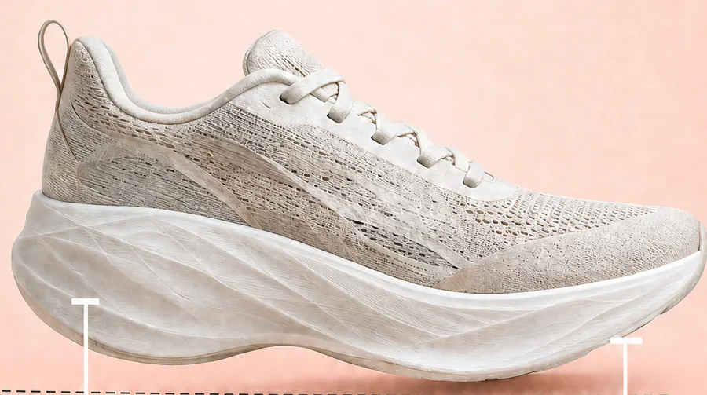
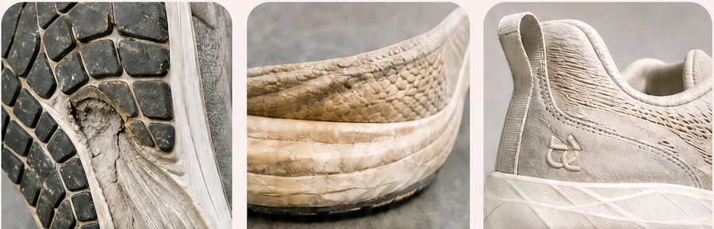
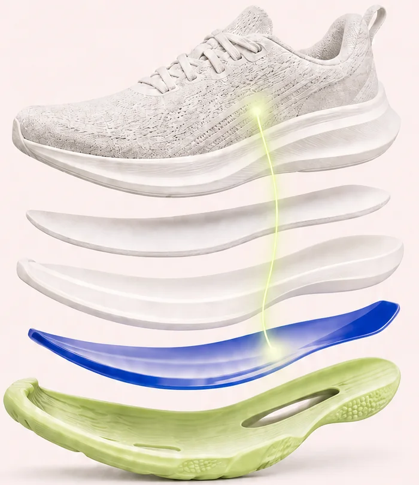
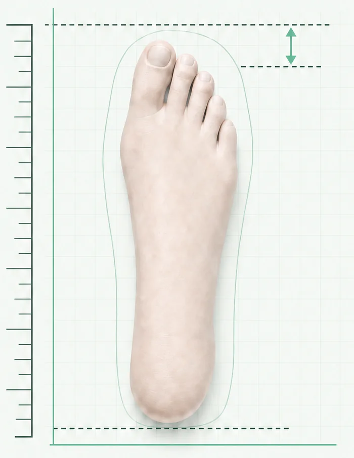
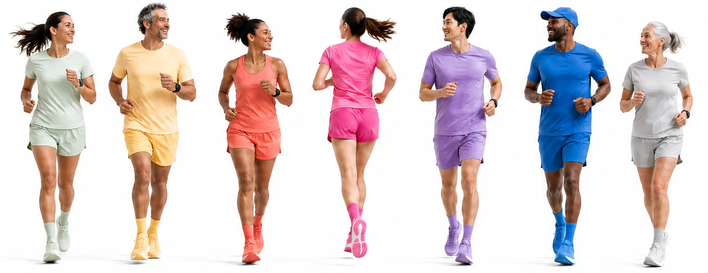

SEU PRIMEIRO PASSO
Para começar
Conforto para criar o hábito.
triobum

Feito para o seu ritmo.
Encontrar meu tênisUm bom tênis não é igual para todo mundo. O seu começa por aqui.
01 · DESCUBRA
Conte como você corre. A gente ajuda a encontrar o que faz sentido para você.

01 / 02Primeiro, o que você busca e como gosta de sentir o tênis?
Só mais duas respostas para deixar a recomendação mais precisa.
Pronto. Agora vamos encontrar o tênis que combina com o seu corre.
Suas respostas ajudam a filtrar os modelos que mais fazem sentido para você.
02 · ESCOLHA
Uma seleção para cada objetivo, ritmo e momento.
SEU PRIMEIRO PASSO
Conforto para criar o hábito.
SEU DIA A DIA
Feito para acompanhar todos os quilômetros.
NOVO
Leve para quando o ritmo sobe.
PARA IR MAIS LONGE
Proteção para ir mais longe.
DIA DE PROVA
Resposta para quando cada segundo importa.
1 de 5
03 · COMPARE
Duas experiências explicadas do jeito que você sente.
Conforto para todos os dias.

Resposta para subir o ritmo.

A sensação mais macia ajuda você a correr com conforto, mesmo quando o treino fica mais longo.
A espuma mais responsiva devolve energia e deixa as mudanças de ritmo mais naturais.
A base mais ampla traz segurança nas curvas — e também quando as pernas começam a cansar.
A construção leve acompanha as acelerações sem dar a sensação de peso nos pés.
O ajuste acolhe melhor o pé e mantém a sensação de firmeza durante a corrida.
O ajuste mais firme mantém o pé no lugar quando o treino pede curvas e passadas rápidas.
Faz mais sentido para quem está começando ou quer um parceiro confiável para correr todos os dias.
Faz mais sentido para quem já corre com frequência e quer ganhar ritmo nos treinos ou buscar um tempo melhor nas provas.
Escolha o fluxo se conforto e estabilidade vêm primeiro.
Escolha o pulso se leveza e resposta vêm primeiro.
04 · PERGUNTE
Dúvidas reais. Respostas de quem corre, testa e compartilha.
ESCOLHA · PRIMEIROS 10 KM
Se você está começando, conforto, ajuste e adaptação tendem a contar mais do que a presença de uma placa. Veja como pensar nessa escolha.
USO · MANUTENÇÃO
Não existe um número universal de quilômetros. O desgaste do solado, a estrutura e a sensação na corrida ajudam a decidir.
05 · ENTENDA
Um novo jeito de escolher.
Do drop à placa, a triobum traduz tecnologia, uso e desgaste para ajudar você a escolher com mais confiança.
A diferença de altura que muda a sensação da passada.

Drops maiores costumam reduzir a exigência sobre panturrilha e tornozelo. Drops menores deixam a passada mais próxima do solo.
O desgaste aparece no solado, na estrutura — e também no jeito que o tênis responde.

Ela pode ajudar na eficiência, mas não substitui conforto e estabilidade.

A placa faz mais sentido para quem já corre com frequência e quer ganhar ritmo. Para começar, adaptação, conforto e estabilidade costumam importar mais.
Meça o pé, deixe espaço para os dedos e compare a forma entre os modelos.

06 · EXPLORE
Eventos, rotas, serviços e comunidades no mesmo mapa.
07 · CONECTE-SE
Toda corrida fica melhor quando é compartilhada.
